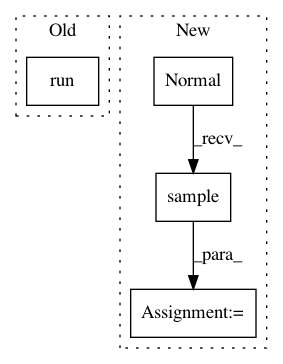

f4c45be6554d717714d6ff5e67ab51bc4ea2e864,tests/unittests_normalizing_flows.py,TestMultiModal,test_bi_modal_planar_chain,#TestMultiModal#,197
Before Change
tf.distributions.Normal(loc=+1., scale=0.5),
])
x = np.ones(5000)
y = sess.run(bimix_gauss.sample([5000]))
model = NormalizingFlowEstimator("nf_estimator_bimodal_planar", 1, 1, flows_type=("planar", "planar", "planar"),
n_training_epochs=1000, random_seed=22)
model.fit(x, y)
After Change
tf.distributions.Normal(loc=-.4, scale=0.4),
tf.distributions.Normal(loc=+.4, scale=0.4),
])
x = tf.distributions.Normal(loc=0., scale=1.).sample([5000])
y = bimix_gauss.sample([5000])
x,y = sess.run([x, y])
model = NormalizingFlowEstimator("nf_estimator_bimodal_planar", 1, 1, flows_type=("affine", "planar", "planar", "planar"),
In pattern: SUPERPATTERN
Frequency: 3
Non-data size: 4
Instances
Project Name: freelunchtheorem/Conditional_Density_Estimation
Commit Name: f4c45be6554d717714d6ff5e67ab51bc4ea2e864
Time: 2019-05-02
Author: simonboehm@mailbox.org
File Name: tests/unittests_normalizing_flows.py
Class Name: TestMultiModal
Method Name: test_bi_modal_planar_chain
Project Name: tensorlayer/tensorlayer
Commit Name: a6652b0c1997bb47dd502bf674e0b3b9b2d09d23
Time: 2019-05-16
Author: 1402434478@qq.com
File Name: examples/reinforcement_learning/tutorial_bipedalwalker_a3c_continuous_action.py
Class Name: ACNet
Method Name: choose_action
Project Name: tensorlayer/tensorlayer
Commit Name: 6ca2a6359dc1374bfb211da8680f3d5f319cdaa5
Time: 2019-05-16
Author: 1402434478@qq.com
File Name: examples/reinforcement_learning/tutorial_bipedalwalker_a3c_continuous_action.py
Class Name: ACNet
Method Name: choose_action